- 00 开篇词 打破四大认知局限，进阶高级性能工程师.md.html
- 01 性能工程：为什么很多性能测试人员无法对性能结果负责？.md.html
- 02 关键概念：性能指标和场景的确定.md.html
- 03 核心分析逻辑：所有的性能分析，靠这七步都能搞定.md.html
- 04 如何构建性能分析决策树和查找瓶颈证据链？.md.html
- 05 性能方案：你的方案是否还停留在形式上？.md.html
- 06 如何抽取出符合真实业务场景的业务模型？.md.html
- 07 性能场景的数据到底应该做成什么样子？.md.html
- 08 并发、在线和TPS到底是什么关系？.md.html
- 09 如何设计全局和定向监控策略？.md.html
- 10 设计基准场景需要注意哪些关键点？.md.html
- 11 打开首页之一：一个案例，带你搞懂基础硬件设施的性能问题.md.html
- 12 打开首页之二：如何平衡利用硬件资源？.md.html
- 13 用户登录：怎么判断线程中的Block原因？.md.html
- 14 用户信息查询：如何解决网络软中断瓶颈问题？.md.html
- 15 查询商品：资源不足有哪些性能表现？.md.html
- 16 商品加入购物车：SQL优化和压力工具中的参数分析.md.html
- 17 查询购物车：为什么铺底参数一定要符合真实业务特性？.md.html
- 18 购物车信息确定订单：为什么动态参数化逻辑非常重要？.md.html
- 19 生成订单信息之一：应用JDBC池优化和内存溢出分析.md.html
- 20 生成订单信息之二：业务逻辑复杂，怎么做性能优化？.md.html
- 21 支付前查询订单列表：如何分析优化一个固定的技术组件？.md.html
- 22 支付订单信息：如何高效解决for循环产生的内存溢出？.md.html
- 23 决定容量场景成败的关键因素有哪些？.md.html
- 24 容量场景之一：索引优化和Kubernetes资源分配不均衡怎么办？.md.html
- 25 容量场景之二：缓存对性能会有什么样的影响？.md.html
- 26 稳定性场景之一：怎样搞定业务积累量产生的瓶颈问题？.md.html
- 27 稳定性场景之二：怎样搞定磁盘不足产生的瓶颈问题？.md.html
- 28 如何确定异常场景的范围和设计逻辑？.md.html
- 29 异常场景：如何模拟不同组件层级的异常？.md.html
- 30 如何确定生产系统配置？.md.html
- 31 怎么写出有价值的性能报告？.md.html
- 我们这个课程的系统是怎么搭建起来的？.md.html
- 结束语 做真正的性能项目.md.html
- 捐赠
24 容量场景之一：索引优化和Kubernetes资源分配不均衡怎么办？
你好，我是高楼。
我们知道，做容量场景的目的是要回答“线上容量最大能达到多少”的问题，这就要求我们在设计和执行容量场景的时候要非常严谨。当然，这也意味着容量场景将是一个艰辛的过程。通过这节课，你就能深切地体会到。
今天，我们重点来解决索引优化和Kubernetes调度不均衡的问题。关于索引优化，你可能会奇怪，基准场景都捊过一遍了，为啥还有要看索引的问题？是呀，确实让人疑惑。从这里就可以看出，容量场景和基准场景真的不太一样，因为这其中有业务相互影响的问题。
而Kubernetes调度不均衡的问题将导致多个Pod运行在了同一个worker上，像这样的问题，我们不在容量场景中是看不到的，希望能对你处理类似问题有一个借鉴。
此外，我们还将一起看看在压力稳定的情况下，响应时间不断攀升该怎么办。这种问题很常见，但是每次出现问题点都不太相同，这次你将看到一个具体的案例。
好，我们开始吧！
场景运行数据
第一次运行
不得不承认，第一次来到容量场景，还真是心惊胆颤的。
首先，我们小心翼翼地设置起容量场景的比例，也就是我们在第5讲中提到的业务比例，再设置好相应的参数和关联。然后，我们把容量场景跑起来，得到了这样的信息：
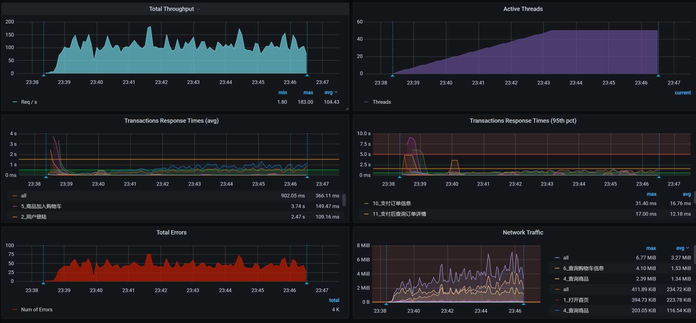
顿时就有一种满头包的感觉，有没有？！不过，“见招拆招，遇魔降魔”不就是我们的宗旨吗？既然有错，那咱们就先解决错误吧。
我们先看下错误信息：
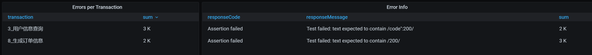
看来是两个脚本有问题。我单独运行了这两个脚本之后，发现是参数化数据设置错了。因为之前每个接口都是单脚本运行的，而现在要连到一起跑，所以，参数化数据需要重新配置。这种简单的错误，我就不详细描述了，只要你细心一点，很快就能查到。
修改了这个简单的脚本错误之后，我们再把容量场景跑起来：
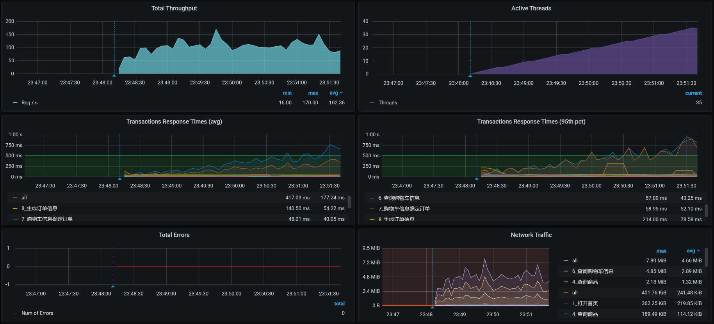
先不管性能怎么样，你看，现在至少没有错误信息了，对不对？很好，我们接着来看容量场景中的其他问题。
第二次运行
解决了第一个问题之后，我们把场景运行一段时间，又看到了下面这样的场景运行数据：
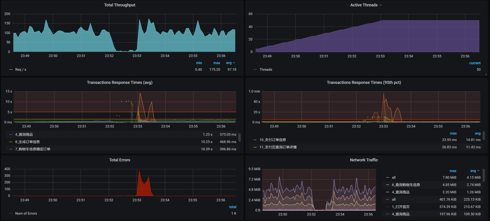
数据并没有太好看，还是有失败的地方。我们来看看是怎么一回事：
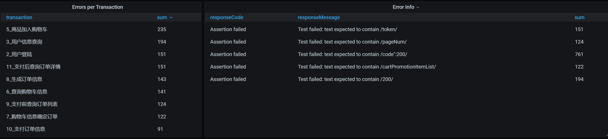
从数据上来看，错误信息应该和脚本无关，是某个组件出现了问题，导致所有的脚本都不能正常运行了。
通过查看全局监控的Pod界面，我们看到这样的现象：
考虑到我们在前面分析中对ES的资源限制得比较狠（只有1C，因为不想让ES影响其他业务，这一点在第15讲中已经有过分析），在前文中虽然我们通过对ES POD扩容提升了性能，但为了不影响后面的优化，我又给调回去去了。在这里，我们先把使用ES的业务，也就是查询商品给禁掉，再次运行起来容量场景。
第三次运行
我们来看第三次运行的结果：
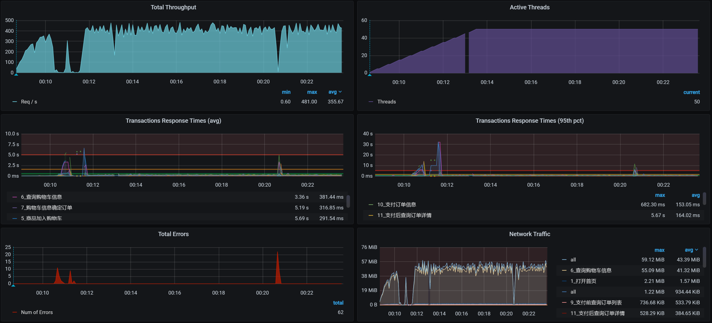
还是有少量的报错，我们先看错在哪里，再解决响应时间长的问题。
这里我说明一点，对于报错，我们可以先看错误信息是什么，脚本有没有问题。但是，由于我们已经来到了容量场景，脚本如果有问题，就会在基准场景中体现出来了。所以，这时候我们去查应用的日志更为理智。
于是，通过一层层地查日志，我们留意到了Cart信息：
2021-01-26 00:20:43.585 ERROR 1 --- [o-8086-exec-669] o.a.c.c.C.[.[.[/].[dispatcherServlet] : Servlet.service() for servlet [dispatcherServlet] in context with path [] threw exception [Request processing failed; nested exception is feign.RetryableException: timeout executing GET http://mall-member/sso/feign/info] with root cause
java.net.SocketException: Socket closed
很显然，在Cart服务上，我们看到已经报远程调用（Feign调用）超时了，并且调用的是member服务。
由于是Cart服务调用Member服务出的错，我们现在去看Member日志：
2021-01-26 00:20:46.094 ERROR 1 --- [o-8083-exec-308] o.a.c.c.C.[.[.[/].[dispatcherServlet] : Servlet.service() for servlet [dispatcherServlet] in context with path [] threw exception [Request processing failed; nested exception is feign.RetryableException: timeout executing POST http://mall-auth/oauth/token?password=123456&grant_type=password&client_secret=123456&client_id=portal-app&username=7dcmtest13657257045] with root cause
java.net.SocketTimeoutException: timeout
你看，Member上显示的是读Auth出错。可是，当我再去看Auth服务时，发现Auth服务上空空如也，啥错也没有。
根据我的经验，报错可能是由于一个瞬间问题导致的读超时，只有等它再次出现我们再去收拾了。
因为对于错误信息，我们暂时还没查到具体是什么问题。所以，我们接着持续运行场景，我们看一下结果：
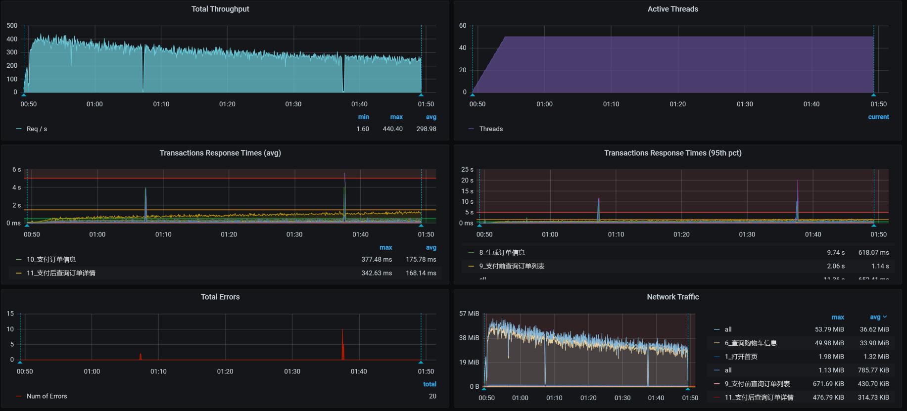
你瞧，确实有少量报错。从整体上看，这只是少量的读超时问题。在性能测试中，有毛刺是很正常的情况。而且现在的部署结构中仍然有单点Java应用存在，这种情况也不可避免。
不过，从上图中，我们能看到一个比较明显的问题，那就是TPS在不断下降，我们得先解决这个问题才行。
第一阶段分析
定向监控分析
虽然整体的TPS不高，但是我们面对的第一个问题仍然是：TPS会在压力持续之下不断下降。
由于我们现在执行的是容量场景，包含了多个业务，所以我们得先知道是什么样的业务导致了像上图中那样的TPS趋势。而容量场景中的脚本都是接口串行的，因此，当一个脚本出现这种情况时，所有的业务都会慢下来，即使是那些本身不慢的业务，TPS也会受到影响。
但是，对于没有问题的业务接口，它们的响应时间是不会受到影响的。那些响应时间变长的业务接口，自然就成了我们重点关注的对象了。
通过一个一个的业务接口排查，我发现有三个业务的响应时间，随着场景的持续在不断增加：
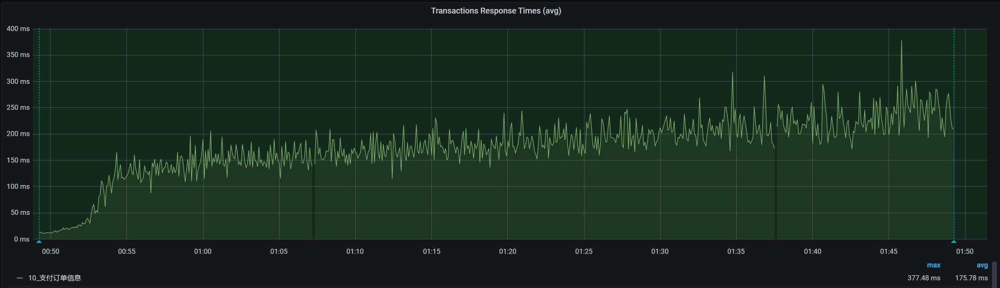-
 -
-

这三个业务分别是“支付前查询订单列表”、“支付订单信息”和“支付后查询订单详情”，但是在前面的基准场景的分析中，它们并没有出现这种现象，也就是说它们是在容量场景中新出现了问题。
既然这几个业务的脚本都有这种现象，那我们就接着来分析时间具体慢在了哪里。我先从最简单的业务链路paySuccess（支付订单信息）接口查起。
这个接口的架构图我们在第22讲中已经讲过了，就是JMeter - Gateway - Order - Mysql（如果再加上其他的技术组件，架构图会更复杂一些。不过，我们现在还没有看到它们的影响，所以，我暂时不列在这里）。
通过性能分析决策树的全局监控计数器逐层查看，我看到有一个SQL语句在不断变慢：
SELECT id, member_id, coupon_id, order_sn, create_time, member_username, total_amount, pay_amount, freight_amount, promotion_amount, integration_amount, coupon_amount, discount_amount, pay_type, source_type, STATUS, order_type, delivery_company, delivery_sn, auto_confirm_day, integration, growth, promotion_info, bill_type, bill_header, bill_content, bill_receiver_phone, bill_receiver_email, receiver_name, receiver_phone, receiver_post_code, receiver_province, receiver_city, receiver_region, receiver_detail_address, note, confirm_status, delete_status, use_integration, payment_time, delivery_time, receive_time, comment_time, modify_timeFROM oms_orderWHERE ( delete_status = 0 AND member_id = 277673 )ORDER BY create_time DESCLIMIT 4, 1;
接着，我们进一步看看这个Select语句的索引：
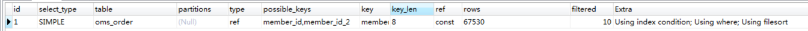
咦，怎么有两个可能会用到的索引？具体查看一下，果然有两个索引，并且还是在同一个列上。
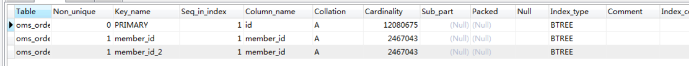
我们先删一个再说。不过，删索引并不是为了解决性能问题，我们只是顺手改一下而已。
现在，索引上显示的数据很明确，随着容量场景的执行，这个SQL查的数据行数越来越多。既然这个Select语句越来越慢，那我们就去查一下根据它的条件产生的直方图是什么。我查到了这样的直方图：
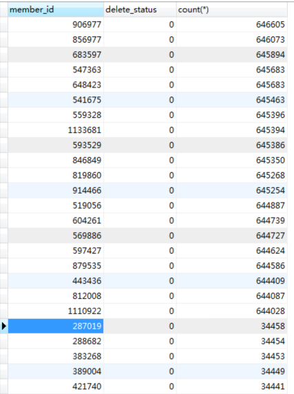
你看，一个用户下出现了很多个订单，应该是出现了集中插入订单数据的情况。因此，我们查一下在使用参数化的文件中，用户信息是不是也重复了。
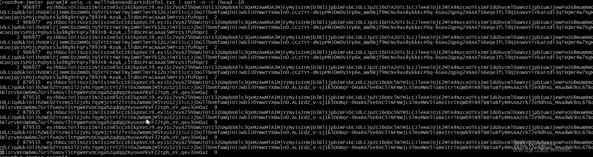
通过查找，我们看到在参数化文本中，确实有大量的重复数据。我们梳理一下业务脚本的参数化逻辑：
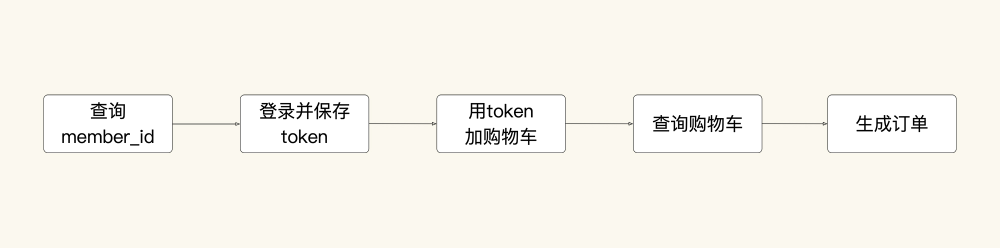
既然订单数据是重复的，那我们就反向追溯回去，肯定是购物车数据重复了；再接着往前追溯，应该是member_id在使用用户Token时出现了重复。在检查了所有的业务脚本之后，我们看到是获取用户参数脚本生成的Token：
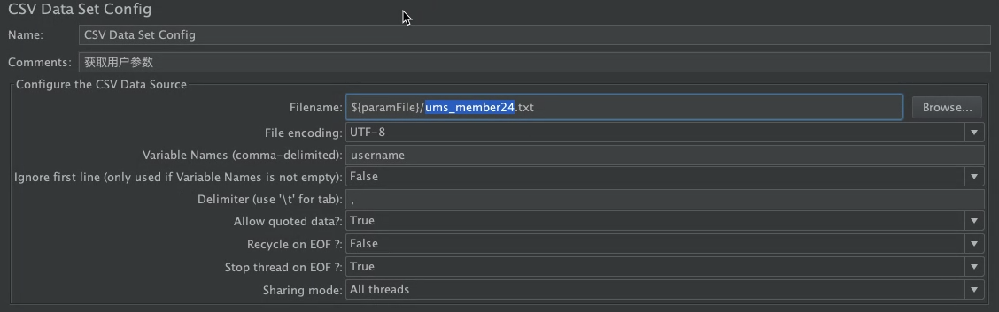
而这个脚本中的数据，使用的是这样的参数文件：
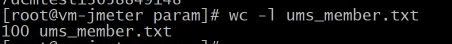
这个参数文件中只有100条数据，而这100条数据中就有大量的重复member_ID。这样一来，问题就清楚了：原来是在造数据阶段，我们一开始使用的Member数据已经有了问题，从而导致了订单数据大量重复。
问题的原因查清楚了，我们现在只有重新造数据了。这时候我们就要注意，必须使用不重复的member_id来造订单数据，并且在每一步中，检查一下生成的数据是否有重复的现象。
经过一番折腾之后，TPS如下：
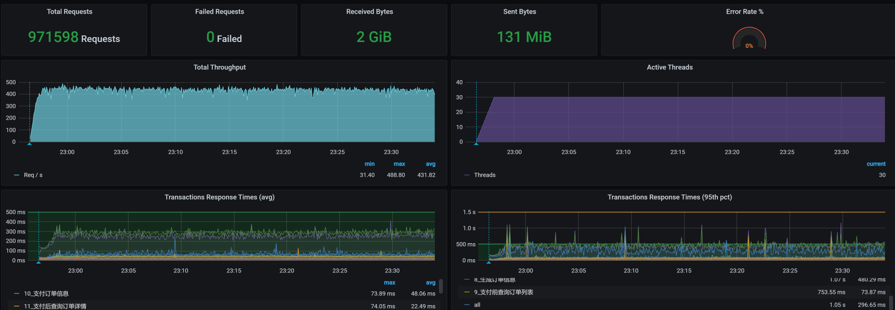
这个优化效果很好，我们通过解决参数化的重复问题，解决了同一个用户下产生大量订单的问题，进而解决了我们在前面看到的响应时间不断增加的问题。
对于这样的参数化问题，其实难点就在于参数化是登录时做的，而在订单脚本中使用的参数，会用到登录脚本中产生的数据，但由于前面做的参数化出现了重复，导致后续的参数也重复了。对于这样的问题，我们需要耐心梳理参数化的数据来源。
到这里，我们解决了响应时间不断增加的问题，不过，我们的优化还没结束。你看上图中响应时间的窗口，出现了有的接口响应时间较长、整体TPS并没有太高的现象，因此，我们还要进行第二阶段的分析。
第二阶段分析
根据我们的性能分析逻辑，下面我们要做的就是拆分响应时间和查看全局监控数据了，并且这两步都要做。
相信你已经发现了，我们在分析的时候，有时候要拆分响应时间，有时候就直接看全局监控数据了。这是因为当我们能从全局监控数据中看到问题所在时，不用拆分响应时间就能往下分析，我们只需要按照分析七步法，接着往下走就可以了。
如果我们没有从全局监控数据中看到比较明显的资源消耗，同时，响应时间又在不断上升，那我们就必须拆分响应时间，来精准地判断。
全局监控分析
在查看了全局监控数据之后，数据库的资源如下所示：
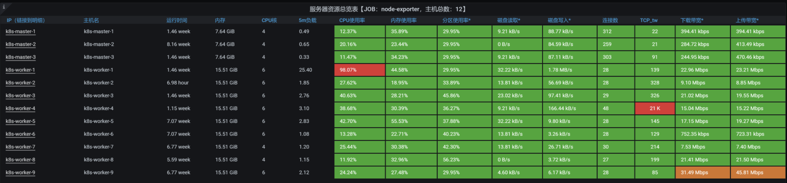
你看，worker-1的CPU资源使用率比较高，我们进到这个机器中看一下top：
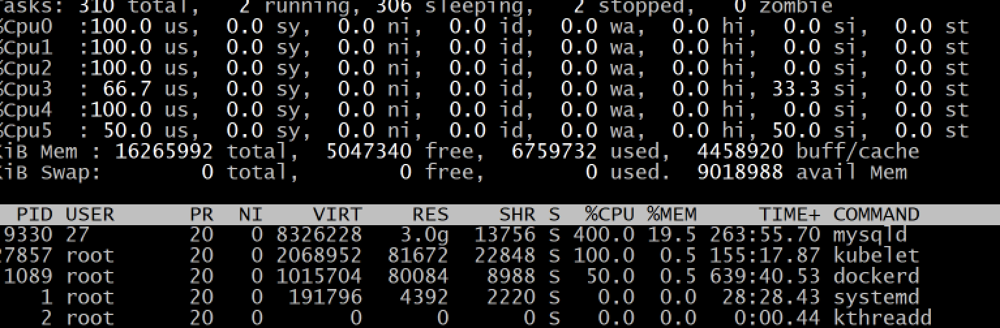
显然多个CPU使用率已经达到了100%，从process table中我们也能看到，CPU消耗最高的显然是MySQL进程。那下面的的分析逻辑就很清楚了（在第16讲中已经详细描述过）。
定向监控分析
这是一个典型的数据库CPU使用率高的问题，而且也相对比较简单。我们仍然是看MySQL的全局监控数据、查SQL、查执行计划和创建索引。有问题的SQL如下所示：
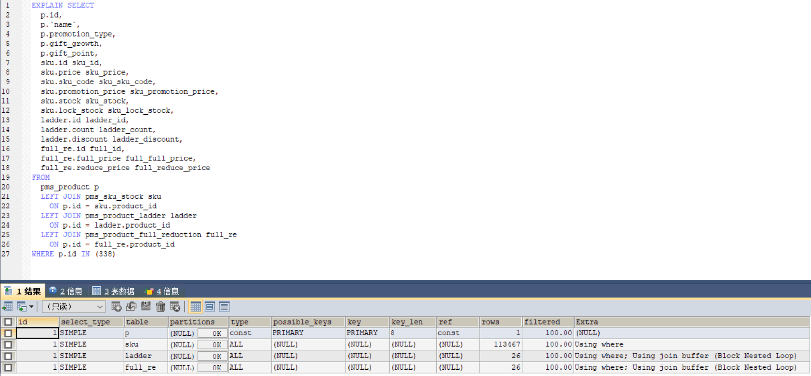
同样，type列的ALL告诉我们这个SQL是全表扫描。在相应的表上创建索引之后，执行计划如下：
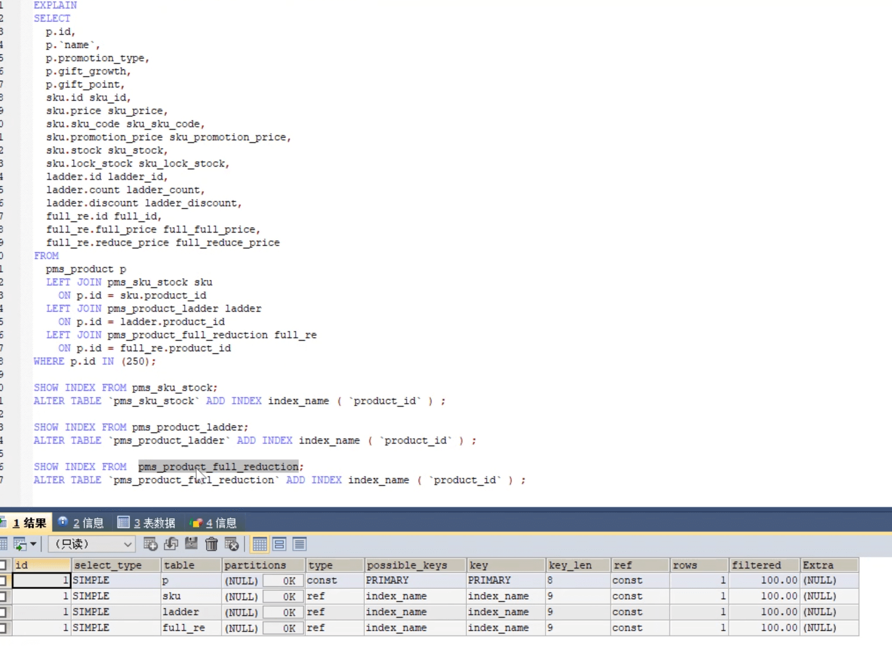
从type中的ref值来看，我们现在已经创建好索引了。
接着我们把容量场景再执行起来，我们得到下面这张全局监控图：
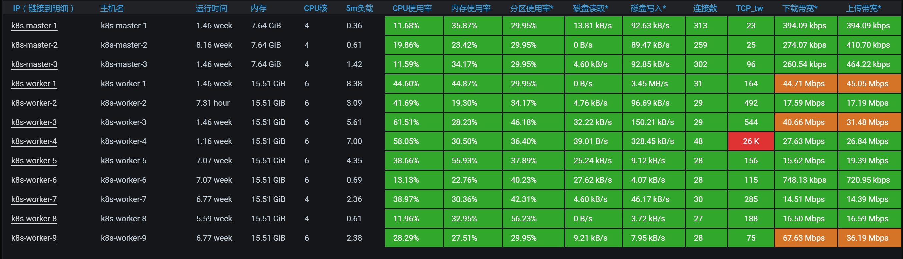
可以看到，worker-1的CPU已经下去了。
我们再来看一下场景的运行结果：
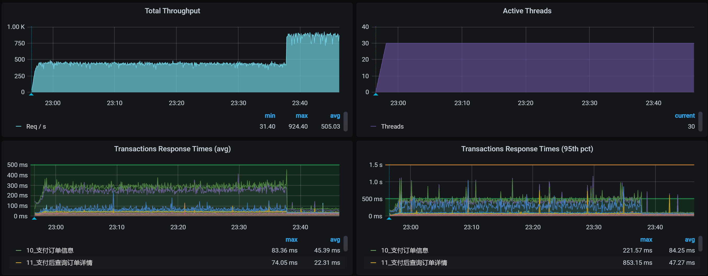
嗯，效果还是不错的。索引能带来的作用就是这样，TPS会在我们增加索引之后，增加很多。这一点我在之前的课程中已经反复提到了，这里就不再详细说了。
有人可能会问，不对呀，在之前的基准场景中为什么没有增加索引呢？之前的接口难道没有因为没增加索引出现瓶颈吗？
对此，我其实也有这样的疑问。你想想，这个SQL是在生成订单时使用的，和优惠券相关，我删除了索引之后，又回去重新执行了生成订单的接口，发现TPS还是能达到之前基准场景的峰值。可见，这个SQL的问题在之前的场景中，确实没有表现出来，在混合场景中才会出现。
在加了索引之后，我以为TPS可以正常一会了。可是没想到，第二天我在执行场景时，还是看到了不想看到的结果，具体问题我们在下一个阶段分析。
这个项目就是这样，步步为坑。不过，也正是这种步步为坑的项目，才让我们有了更多的分析机会。下面我们就来看看到底出了什么问题。
第三阶段分析
全局监控分析
这就是在我持续执行容量场景之后，全局监控的结果：
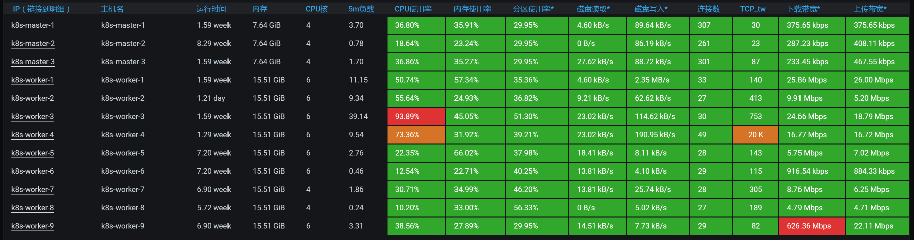
注意，这里不是说不需要拆分响应时间，而是我已经看过了响应时间的拆分数据，发现是Order服务上消耗的时间多。鉴于我们在前面的课程里已经做过多次响应时间的拆分，所以，我在这里就不再具体列出数据了。
看到全局监控数据的第一个界面，我们就已经可以发现资源消耗比较高的节点了。从数据来看，worker-3的CPU使用率上来了达到了90%以上，worker-4的CPU使用率也上来了达到了70%以上，也就是说TPS会不断地掉下来。下面我带着你来分析一下。
定向监控分析
我们进入到worker-3中，执行top，看看它上面都跑了哪些服务：
top - 23:21:36 up 11 days, 5:37, 5 users, load average: 40.53, 49.79, 53.30
Tasks: 335 total, 1 running, 332 sleeping, 2 stopped, 0 zombie
%Cpu(s): 82.5 us, 8.7 sy, 0.0 ni, 3.0 id, 0.0 wa, 0.0 hi, 3.2 si, 2.6 st
KiB Mem : 16265984 total, 2802952 free, 7089284 used, 6373748 buff/cache
KiB Swap: 0 total, 0 free, 0 used. 8759980 avail Mem
PID USER PR NI VIRT RES SHR S %CPU %MEM TIME+ COMMAND
26573 root 20 0 8930960 837008 15792 S 231.5 5.1 113:46.65 java -Dapp.id=svc-mall-order -javaagent:/opt/skywalking/agent/skywalking-agent.jar -Dskywalking.agent.s+
26973 root 20 0 8920512 810820 15776 S 173.7 5.0 112:24.54 java -Dapp.id=svc-mall-order -javaagent:/opt/skywalking/agent/skywalking-agent.jar -Dskywalking.agent.s+
24386 root 20 0 8864356 702676 15764 S 98.7 4.3 295:33.69 java -Dapp.id=svc-mall-portal -javaagent:/opt/skywalking/agent/skywalking-agent.jar -Dskywalking.agent.+
17778 root 20 0 8982272 803984 16888 S 97.4 4.9 375:15.37 java -Dapp.id=svc-mall-portal -javaagent:/opt/skywalking/agent/skywalking-agent.jar -Dskywalking.agent.+
1087 root 20 0 2574160 132160 31928 S 25.6 0.8 1637:21 /usr/bin/kubelet --bootstrap-kubeconfig=/etc/kubernetes/bootstrap-kubelet.conf --kubeconfig=/etc/kubern+
25589 root 20 0 8839392 585348 15772 S 20.8 3.6 160:58.44 java -Dapp.id=svc-mall-auth -javaagent:/opt/skywalking/agent/skywalking-agent.jar -Dskywalking.agent.se+
1095 root 20 0 998512 86168 13100 S 6.5 0.5 837:37.56 /usr/bin/dockerd -H fd:// --containerd=/run/containerd/containerd.sock
29226 root 20 0 8906120 881632 13700 S 5.8 5.4 760:36.91 java -Dapp.id=svc-mall-search -javaagent:/opt/skywalking/agent/skywalking-agent.jar -Dskywalking.agent.+
28206 root 20 0 7960552 341564 15700 S 4.9 2.1 66:28.23 java -Dapp.id=svc-mall-search -javaagent:/opt/skywalking/agent/skywalking-agent.jar -Dskywalking.agent.+
9844 root 20 0 1632416 47092 16676 S 2.9 0.3 559:35.51 calico-node -felix
9646 polkitd 20 0 4327012 97744 4752 S 2.6 0.6 25:26.93 /usr/local/lib/erlang/
你看，杂七杂八的应用都弄到这一台机器上了，非常不符合正常的架构。
我们在前面提到，在拆分响应时间的过程中，发现是Order服务消耗的时间多。而Order服务又是当前这个场景中最需要资源的应用，那我们就先把Auth、Portal之类的服务移走。
移走了一些服务之后，我们先看看场景执行数据如何，再来决定是否需要再进行定向监控分析。
为了确保我们瓶颈判断的方向正确，我们先来看一下全局监控数据：
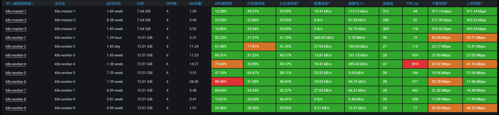
再看一下场景运行数据：
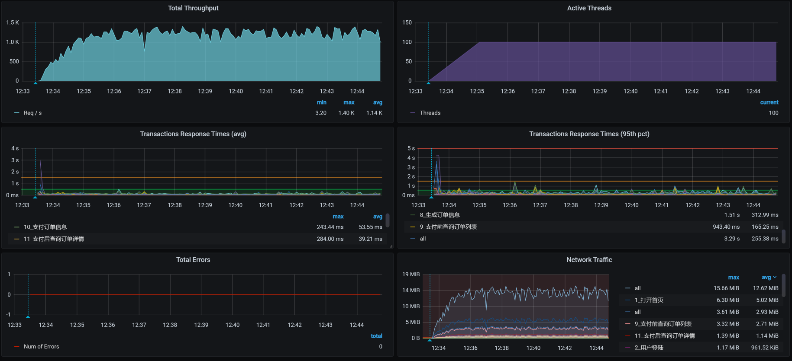
你看，TPS还挺正常的，对不对？看来我们不用再继续定向分析了。不过，这样的结果是不是真的正常了呢？我们的容量场景是不是可以结束了呢？欲知后事如何，且听下回分解。
总结
我们这节课的分析过程还是挺坎坷的，光是场景运行就执行了三次，可见即便基准容量已经测试通过了，容量场景也没那么容易运行起来。
在第一阶段的分析中，我们主要定位了在压力线程不变的情况下，TPS随时间增加而增加的问题。请你注意，压力不变时，TPS平稳才是正常的。
在第二阶段分析中，我们定位了索引不合理的问题。这样的问题算是比较常见的，定位起来比较简单，优化起来也比较容易出效果。
在第三阶段分析中，我们解决了资源使用过于集中的问题，其中，我做了资源的重新分配，并且也看起来挺正常了。
对于资源的分配，我们要作出明确的判断。在Kubernetes中，资源的均衡分配很多时候都需要依赖Kubernetes的调度能力。而Kubernetes的调度是需要在调度的那个时刻来判断的，在压力持续的过程中，资源消耗并不一定合理，因此，我们需要在压力持续的过程中对Pod做出调整。
课后作业
这就是今天的全部内容，最后给你留两个思考题吧：
- 为什么在压力线程不变的情况下，TPS曲线下降、响应时间上升是不合理的？
- 当资源使用过于集中的时候，如何定位Pod相互之间的影响？你有没有和这节课讲的不一样的招？
记得在留言区和我讨论、交流你的想法，每一次思考都会让你更进一步。
如果这节课让你有所收获，也欢迎你分享给你的朋友，共同学习进步。我们下一讲再见！
© 2019 - 2023 Liangliang Lee. Powered by gin and hexo-theme-book.